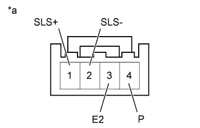

SHIFT LEVER > ON-VEHICLE INSPECTION |
| 1. CHECK SHIFT LOCK OPERATION |
Move the shift lever to P.
Turn the engine switch off.
Check that the shift lever cannot be moved from P.
Turn the engine switch on (IG), depress the brake pedal and check that the shift lever can be moved to other positions.
If the operation cannot be performed as specified, inspect the transmission floor shift assembly and shift lock control ECU.
| 2. CHECK SHIFT LOCK RELEASE BUTTON OPERATION |
When operating the shift lever with the shift lock release button pressed, check that the lever can be moved to any position.
If the operation cannot be performed as specified, check the transmission floor shift assembly.
| 3. CHECK SHIFT LOCK CONTROL ECU |
Measure the voltage and resistance according to the value(s) in the table below.
| Tester Connection | Condition | Specified Condition |
| F75-8 (IG) - F75-1 (E) | Engine switch on (IG) | 11 to 14 V |
| F75-8 (IG) - F75-1 (E) | Engine switch off | Below 1 V |
| F75-4 (STP) - F75-1 (E) | Brake pedal depressed | 11 to 14 V |
| F75-4 (STP) - F75-1 (E) | Brake pedal released | Below 1 V |
| F75-1 (E) - Body ground | Always | Below 1 Ω |
Disconnect the shift lock solenoid connector from the shift lock control ECU.
Measure the voltage according to the value(s) in the table below.
| Tester Connection | Condition | Specified Condition |
| 1 (SLS+) - 2 (SLS-) | Engine switch off | Below 1 V |
| 1 (SLS+) - 2 (SLS-) | Engine switch on (IG) | Below 1 V |
| Engine switch on (IG) and brake pedal depressed | 11 to 14 V |
| *a | Component without harness connected (Shift Lock Control ECU) |
| 4. CHECK SHIFT LOCK SOLENOID |
|  |
Disconnect the shift lock solenoid connector from the shift lock control ECU.
Measure the resistance according to the value(s) in the table below.
| Tester Connection | Condition | Specified Condition |
| 1 (SLS+) - 2 (SLS-) | Always | 101 to 123 Ω |
| 3 (E2) - 4 (P) | Shift lever in P | 10 kΩ or higher |
| 3 (E2) - 4 (P) | Shift lever not in P | Below 1 Ω |
| *a | Component without harness connected (Shift Lock Control Solenoid) |
Apply 12 V battery voltage to the shift lock solenoid and check that the valve moves and makes an operating noise.
| Measurement Condition | Specified Condition |
| Solenoid moves and makes an operating noise |